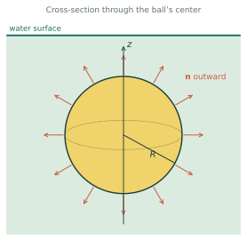
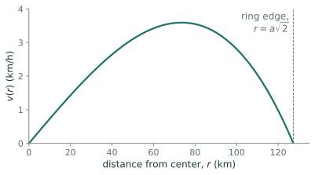

Orient boundaries positively, including regions with holes
Verify Green’s theorem edge by edge and use it to skip hard line integrals
Find areas and centroids from boundary data (ellipses, polygons, planimeters)
Handle singularities by excising a small circle; know when circulation is zero
Review: sphere symmetry for surface integrals and flux
\(\oint_{\partial D}P\,dx+Q\,dy=\iint_D\Big(\dfrac{\partial Q}{\partial x}-\dfrac{\partial P}{\partial y}\Big)dA\), \(\partial D\) positively oriented (region on the left), \(P,Q\) continuously differentiable on an open set containing \(D\)
Enter fractions, decimals, pi, e, sqrt(...), sin(...), cos(...), exp(...), or log(...). Use ^ for powers and radians for angles. Vectors and bounds use commas. Decimal answers are checked to two decimal places (answers smaller than 0.1 need two significant digits); exact forms such as 6pi sqrt(37) are always fine. LaTeX such as \frac{1}{2}, \sqrt{2}, \pi, and \phi is also accepted. Equivalent expressions are accepted; potential functions may differ by a constant. Units are provided beside each input.
Hints and solutions are local worked guidance. They do not send messages to an AI service. Your inputs and notes stay in this browser; this is an ungraded practice site.
Since a 1964 magazine article, the “Bermuda Triangle” between Miami, Bermuda, and San Juan has been blamed for vanished ships and planes; NOAA finds no evidence that disappearances there are any more frequent than elsewhere. Its shape is still a good test of a remarkable idea. Before computers, chart-makers measured areas by tracing a boundary with a planimeter, and today mapping software finds areas and centers from boundary coordinates alone. How can the edge know what is inside?
Building the model
1From the real world
NOAA stations: Virginia Key (Miami) \(25.73^\circ\) N \(80.16^\circ\) W; Bermuda \(32.37^\circ\) N \(64.70^\circ\) W; San Juan \(18.46^\circ\) N \(66.12^\circ\) W
A flat chart: east–west and north–south distances in km at latitude \(25.5^\circ\) N, drawn at 1 cm \(=100\) km
Vertices rounded to the nearest 100 km
Idealized linear planimeter: the arm (length \(L=10\) cm) slides along a rail on the \(x\)-axis; the wheel at the tracer rolls by the motion perpendicular to the arm
3So the model is
Triangle \(T\) (cm): M \(=(0,0)\), S \(=(14,-8)\), B \(=(16,7)\)
Calibration ellipse: \(x=6\cos t\), \(y=4\sin t\) cm, \(0\le t\le2\pi\)
The chart model (1 cm \(=100\) km) with the idealized planimeter: the arm’s foot slides on the rail (\(y=0\)); the wheel at the tracer rolls by the motion perpendicular to the arm.
First, on paper
Orient the triangle’s boundary positively (in which order are the vertices visited?) and parametrize each edge for \(0\le t\le1\). State the hypotheses of Green’s theorem and check them for the planimeter field; why must \(|y|<L\) on the whole region? Show the wheel roll is \(A/L\) for any traced region, and say what the wheel shows if the operator traces clockwise. Verify part (c) with the double integral \(\iint_T2x\,dA\), then find the centroid’s \(\bar x=\frac1{2A}\oint x^2\,dy\) and say where it is. Review: compute the scalar integral \(\int x\,ds\) along the Miami–San Juan edge.
aUse \(A=\tfrac12\oint x\,dy-y\,dx\) with \(x=6\cos t\), \(y=4\sin t\) to find the area of the calibration ellipse.
A step in the right direction
bFind the wheel roll when the tracer goes once counterclockwise around the triangle.
A step in the right direction
cCompute \(\oint_{\partial T}x^2\,dy\) edge by edge, with \(\partial T\) positively oriented.
A step in the right direction
View full solution +
Follow the reasoning
Counterclockwise order is M \(\to\) S \(\to\) B \(\to\) M, since \((14,-8)\times(16,7)=14\cdot7+8\cdot16=226>0\). Area: \(A=\tfrac12(226)=113\) cm2, i.e. \(1.13\) million km2 (the spherical triangle through the three stations has about \(1.15\) million km2).
Ellipse: \(\tfrac12\int_0^{2\pi}24\,dt=24\pi\approx75.40\) cm2. Planimeter: \(P=-y/L\), \(Q=\sqrt{L^2-y^2}/L\) are continuously differentiable where \(|y|<L\), so with \(L=10\) cm and \(-8\le y\le7\) Green applies: roll \(=\iint_T(0+\tfrac1L)\,dA=A/L=11.3\) cm. The awkward \(\sqrt{L^2-y^2}\,dy\) term never needs integrating. Tracing clockwise reverses the boundary, and the wheel reads \(-11.3\) cm.
Edges: \(\int_0^1(14t)^2(-8)\,dt=-\tfrac{1568}3\); \(\int_0^1(14+2t)^2(15)\,dt=15(196+28+\tfrac43)=3380\); \(\int_0^1(16-16t)^2(-7)\,dt=-\tfrac{1792}3\). Total \(=2260\) cm3.
Double integral (\(Q=x^2\), \(P=0\)): \(\iint_T2x\,dA=2A\bar x\). Since \(\bar x=(0+14+16)/3=10\) for a triangle, this is \(2(113)(10)=2260\), matching. So \(\bar x=10\) cm, about 1,000 km east of Miami; similarly \(\bar y=-\tfrac13\) cm, a point in open ocean north of Hispaniola.
Review: on M to S, \(\mathbf c(t)=(14t,-8t)\) has speed \(\sqrt{260}\), so \(\int x\,ds=\int_0^1 14t\sqrt{260}\,dt=7\sqrt{260}\approx112.9\) cm2.
Final answers
a.\(24 \pi\) cm2
b.\(11.3\) cm
c.\(2260\) cm3
Discussion
The “region” has no agreed boundary: its area depends on which vertices a writer chose, so it is a story, not a measurement. Before claiming danger you would need a fixed boundary, counts of incidents, and the amount of shipping and air traffic inside it, compared with other busy regions. NOAA finds no evidence of excess losses.
Think it through
Writers have given the Triangle areas from 1.3 to 3.9 million km². What does that range tell you, and what would you need before trusting any claim that the region is unusually dangerous?
Saved on this browser · Discussion prompt, not automatically graded
The Roman theatre at Orange, in southern France, still has its stone seating: a half-ring wrapped around a semicircular orchestra, facing the stage. How much seating area is there, and how far from the front of the stage does the average spectator sit? A surveyor’s software answers both questions by walking the boundary.
Area \(A=\tfrac12\oint_{\partial D}x\,dy-y\,dx\); first moment \(M=-\tfrac12\oint_{\partial D}y^2\,dx\); \(\bar y=M/A\)
Plan view of the model seating \(D\), with the stage front along \(y=0\).
First, on paper
Sketch \(D\), mark its four boundary pieces, and orient each one so that \(D\) stays on the left. Explain why the inner arc must be traversed clockwise. Which pieces contribute to \(-\tfrac12\oint y^2\,dx\), and why do the two straight pieces contribute nothing? Use Green’s theorem to turn the area and the first-moment boundary integrals into double integrals, and evaluate them in polar coordinates. Check the outer-arc piece directly with a parametrization. Finally find \(\bar y\), and estimate the capacity at \(0.5\) m2 per spectator.
aFind the seating area \(A\).
A step in the right direction
bFind the inner arc’s contribution to \(-\tfrac12\oint_{\partial D}y^2\,dx\).
A step in the right direction
cFind the first moment \(M=-\tfrac12\oint_{\partial D}y^2\,dx=\iint_D y\,dA\).
A step in the right direction
View full solution +
Follow the reasoning
\(D\): \(15\le r\le52\), \(0\le\theta\le\pi\). Positive boundary: the segment from \((15,0)\) to \((52,0)\); the outer arc counterclockwise to \((-52,0)\); the segment to \((-15,0)\); the inner arc clockwise back to \((15,0)\). On the inner arc the region lies outside the small circle, so keeping it on the left means going clockwise.
On the segments \(y=0\), so \(y^2\,dx=0\). Outer arc: \(x=52\cos t\), \(y=52\sin t\), \(0\le t\le\pi\), gives \(-\tfrac12\int_0^\pi52^2\sin^2t(-52\sin t)\,dt=\tfrac{52^3}2\cdot\tfrac43=\tfrac23(52^3)\). Inner arc (clockwise): \(-\tfrac23(15^3)=-2250\).
Green: \(M=\iint_D y\,dA=\int_0^\pi\sin\theta\,d\theta\int_{15}^{52}r^2\,dr=\tfrac23(52^3-15^3)\approx91{,}488.7\) m3, matching the two arcs. So \(\bar y=M/A\approx23.5\) m from the stage line.
Capacity: \(3894/0.5\approx7800\) spectators, a little above the published 5,850 to 7,300; aisles, stairs, and the stage-side walls take part of the plan area.
Final answers
a.\(1239.5 \pi\) m2
b.\(-2250\) m3
c.\(\frac{274466}{3}\) m3
Discussion
The stepped seats rise away from the stage, so the actual stone surface (seat tops plus risers) is larger than the plan-view area, which is a projection. \(\bar y\) is only the average horizontal distance from the stage line; the distance to the actors also includes sideways offset and the height of the upper rows.
Think it through
Real Roman seating rises in stone steps away from the stage. Is the plan-view area you found more or less than the actual stone seat surface, and is \(\bar y\) the same as the average distance from a seat to the actors?
Saved on this browser · Discussion prompt, not automatically graded
Typhoon Haiyan crossed the central Philippines on 8 November 2013 with 10-minute winds of 65 m/s (about 230 km/h). Japan’s Meteorological Agency, the regional center for the western Pacific, reported storm-force winds out to 150 km from the center. Outside the eye, the wind is roughly an ideal vortex whose speed falls off like 1/r. What is its circulation, and does the shape of the loop matter?
Building the model
1From the real world
Maximum 10-minute wind: \(65\) m/s; central pressure \(895\) hPa
Storm-force winds (\(\ge25\) m/s \(=90\) km/h) out to \(150\) km
Gale winds (\(\ge15\) m/s) out to \(460\) km (north), \(330\) km (south)
Outside the eye, the wind is an ideal counterclockwise vortex, calibrated so its speed is \(90\) km/h at \(r=150\) km
The model is not valid in the eye; the field is undefined at the center
Flat map in km, eye at the origin
3So the model is
\(\mathbf v(x,y)=\dfrac{\Gamma}{2\pi}\,\dfrac{(-y,\ x)}{x^2+y^2}\) km/h, with speed \(\Gamma/(2\pi r)\)
Loops: the circle \(r=150\); the ellipse \(x^2/300^2+y^2/200^2=1\); the circle of radius \(100\) about \((420,0)\)
The ideal-vortex model outside the eye (arrows), and the three loops of parts (a)–(c). Map in km.
First, on paper
Compute \(Q_x-P_y\) for \(r>0\). Explain why Green’s theorem on the disk \(r\le150\) km would wrongly predict zero circulation in part (a). For part (b), excise a small circle \(C_\varepsilon\) around the center, orient the boundary of the region between \(C_\varepsilon\) and the ellipse positively, and conclude without parametrizing the ellipse. Explain part (c) with Green’s theorem. Model check: what wind speed does the model predict at JMA’s gale radius of 460 km, and at what radius does it reach 65 m/s? What do these say about the 1/r model?
aFind the circulation of the wind around the circle of radius 150 km centered on the eye, counterclockwise.
A step in the right direction
bFind the circulation around the ellipse \(x^2/300^2+y^2/200^2=1\), traversed clockwise.
A step in the right direction
cFind the circulation around the circle of radius 100 km centered at (420, 0) km, counterclockwise.
A step in the right direction
View full solution +
Follow the reasoning
For \(r>0\), with \(P=-\tfrac{\Gamma}{2\pi}\tfrac{y}{x^2+y^2}\) and \(Q=\tfrac{\Gamma}{2\pi}\tfrac{x}{x^2+y^2}\), both partials equal \(\tfrac{\Gamma}{2\pi}\tfrac{y^2-x^2}{(x^2+y^2)^2}\), so \(Q_x-P_y=0\). But the field is undefined at the center, which lies in every disk around the eye, so Green’s theorem does not apply there.
On \(r=150\): speed \(\Gamma/(2\pi\cdot150)=90\) km/h, so \(\Gamma=2\pi(150)(90)=27000\pi\approx84{,}823\) km2/h, the same on every circle about the eye.
Let \(R_\varepsilon\) lie between the ellipse and \(C_\varepsilon\) (\(\varepsilon<200\)). Its positive boundary is the ellipse counterclockwise plus \(C_\varepsilon\) clockwise. The field is smooth on \(R_\varepsilon\) with zero curl, so \(\oint_{\text{ellipse, ccw}}=\oint_{C_\varepsilon,\text{ccw}}=\Gamma\). Clockwise: \(-27000\pi\approx-84{,}823\) km2/h.
The disk \((x-420)^2+y^2\le100^2\) avoids the center, so Green applies and gives \(\iint0\,dA=0\).
Model check: at \(460\) km the model gives \(90\cdot150/460\approx29\) km/h \(\approx8\) m/s, but JMA reported gale winds (\(\ge15\) m/s) that far north; real winds fall off more slowly than \(1/r\). The model reaches 65 m/s at \(150\cdot25/65\approx58\) km, while the real eyewall was much closer to the center. The ideal vortex is only a rough description outside the core.
Final answers
a.\(27000 \pi\) km2/h
b.\(- 27000 \pi\) km2/h
c.\(0\) km2/h
Discussion
Twice the circulation, \(2\Gamma\): excising the center shows that any loop’s circulation is \(\Gamma\) times the number of times it winds counterclockwise around the eye. The circulation counts the vorticity concentrated in the core (here idealized as a point), not the details of the loop.
Think it through
The circulation around any loop that encloses the eye once is the same. What would it be for a loop that circles the eye twice, and what does that suggest about what the circulation “counts”?
Saved on this browser · Discussion prompt, not automatically graded
In water polo, holding the ball underwater is a foul, and it is hard to do anyway. The rules fix the ball’s size and mass. How hard does the water push back, and how is the ball’s mass spread around a spin axis? Both questions are sphere integrals that symmetry finishes almost instantly. (This problem reviews Weeks 7 and 8 for Quiz 3.)
The ball is a thin uniform spherical shell with circumference \(0.70\) m and mass \(m=0.45\) kg
Water density \(1000\) kg/m3, \(g=9.81\) m/s2; the ball is fully submerged and still
3So the model is
\(S\): \(x^2+y^2+z^2=R^2\), \(R=0.70/(2\pi)\) m \(=35/\pi\) cm, \(z\) measured upward from the ball’s center
Water’s up-thrust: \(\rho g\iint_S(0,0,z)\cdot\mathbf n\,dS\) with \(\mathbf n\) outward
Spin about the \(z\)-axis: \(I=\dfrac{m}{4\pi R^2}\iint_S(x^2+y^2)\,dS\)

The ball as a sphere of radius \(R=35/\pi\) cm, fully under water, with outward normals.
First, on paper
Explain, without parametrizing, why \(\iint_Sx^2\,dS=\iint_Sy^2\,dS=\iint_Sz^2\,dS\) for a sphere centered at the origin, and use \(x^2+y^2+z^2=R^2\) to evaluate them. Find the outward unit normal \(\mathbf n\) on \(S\) and use it with the symmetry result to compute the flux of \((0,0,z)\); why must \(\mathbf n\) point outward here? Then find the ball’s moment of inertia \(I\) and compare it with \(\tfrac25mR^2\) for a solid ball of the same mass. Explain why \(\iint_S z\,dS=0\) but \(\iint_S z\,n_z\,dS>0\).
aEnter \(\iint_S x^2\,dS\) for a sphere of radius r centered at the origin, as a function of r.
A step in the right direction
bFind the outward flux \(\iint_S(0,0,z)\cdot\mathbf n\,dS\) through the ball’s surface.
A step in the right direction
cFind the downward push needed to hold the ball completely under water and still.
A step in the right direction
View full solution +
Follow the reasoning
Rotating the axes (x to y to z) maps the sphere and its area element to themselves, so the three integrals are equal. Their sum is \(\iint_S R^2\,dS=R^2(4\pi R^2)\), so each is \(\tfrac43\pi R^4\).
Outward \(\mathbf n=(x,y,z)/R\), so \((0,0,z)\cdot\mathbf n=z^2/R\) and the flux is \(\tfrac1R\cdot\tfrac43\pi R^4=\tfrac43\pi R^3\), the ball’s volume. With \(R=0.70/(2\pi)=35/\pi\approx11.14\) cm, it is about \(5792\) cm3. An inward normal would flip the sign; the pressure force on the ball is computed with the outward normal.
Up-thrust: \(1000(9.81)(0.005792)\approx56.82\) N. Weight: \(0.45(9.81)\approx4.41\) N. Push: about \(52.41\) N, roughly the weight of a 5.3 kg mass.
Spin: \(I=\frac{m}{4\pi R^2}\iint_S(x^2+y^2)\,dS=\frac{m}{4\pi R^2}\cdot\frac83\pi R^4=\tfrac23mR^2\approx0.00372\) kg·m2, larger than \(\tfrac25mR^2\) because a shell keeps all its mass at the full radius.
\(\iint_S z\,dS=0\) because the top and bottom hemispheres cancel; in \(z\,n_z=z^2/R\) both factors change sign together, so every part contributes positively.
Final answers
a.\(\frac{4 \pi r^{4}}{3}\)
b.\(\frac{171500}{3 \pi^{2}}\) cm3
c.\(-4.4145 + \frac{560.805}{\pi^{2}}\) N
Discussion
Yes: for any closed surface the up-thrust is \(\rho g\iint_S(0,0,z)\cdot\mathbf n\,dS\), which equals ρg times the enclosed volume (a fact the divergence theorem will explain). For a sphere, symmetry lets us compute that flux without the general theorem, because x², y², and z² have equal integrals.
Think it through
The up-thrust equals ρg times the ball’s volume. Would the same be true for a submerged cube or a cylinder, and why does the sphere’s symmetry make it so quick here?
Saved on this browser · Discussion prompt, not automatically graded
Problem 05Extension
Agulhas rings: the loop with the most spin
Off the southern tip of Africa, the Agulhas Current loops back on itself and pinches off giant rings of warm water, about six a year, each 200 to 280 km across and reaching about 1,100 m deep. They drift into the Atlantic, carrying Indian Ocean heat and salt. Inside a ring the water spins; at its edge the spin dies away. Which loop captures the most circulation?
Building the model
1From the real world
About six rings a year, \(200\) to \(280\) km across, reaching about \(1100\) m deep
Rings are anticyclonic (counterclockwise in the Southern Hemisphere)
Surface swirl speed \(v(r)=V_0\dfrac ra\Big(1-\dfrac{r^2}{2a^2}\Big)\) with \(a=90\) km, \(V_0=6.6\) km/h (peak about \(1\) m/s)
The ring ends where the swirl stops, at \(r=a\sqrt2\approx127\) km
3So the model is
\(\mathbf u(x,y)=\dfrac{6.6}{90}\Big(1-\dfrac{x^2+y^2}{16200}\Big)(-y,\ x)\) km/h, for \(x^2+y^2\le16200\)

Model swirl speed across the ring; the swirl stops at the ring edge, \(r=90\sqrt2\approx127\) km.
First, on paper
Explain why maximizing \(\oint_C\mathbf u\cdot d\mathbf r\) over positively oriented simple closed loops is the same as maximizing \(\iint_D(Q_x-P_y)\,dA\) over regions \(D\), and prove that the disk \(r\le a\) wins: compare any region \(D\) with \(D\cap\{r\le a\}\). Check part (b) directly on the circle \(r=a\). Flux form: compute the outward flux \(\oint\mathbf u\cdot\mathbf n\,ds\) across \(r=a\) directly, using \(\mathbf n\,ds=(dy,-dx)\), and compare with \(\iint\operatorname{div}\mathbf u\,dA\).
aEnter \(Q_x-P_y\) for \(\mathbf u=(P,Q)\) as a function of r.
A step in the right direction
bFind the largest possible circulation around a positively oriented simple closed loop inside the ring.
A step in the right direction
cFind the circulation around the ring’s edge, the circle \(r=90\sqrt2\) km, counterclockwise.
A step in the right direction
View full solution +
Follow the reasoning
With \(g(r)=\frac{V_0}{a}\big(1-\frac{r^2}{2a^2}\big)\) and \(\mathbf u=g(-y,x)\): \(Q_x-P_y=2g+rg^{\prime}=\frac{2V_0}{a}\big(1-\frac{r^2}{a^2}\big)=\frac{2(6.6)}{90}\big(1-\frac{r^2}{8100}\big)\) per hour: positive in the core, negative outside \(r=a=90\) km.
For any region \(D\), \(\iint_D(Q_x-P_y)\le\iint_{D\cap\{r\le a\}}(Q_x-P_y)\le\iint_{r\le a}(Q_x-P_y)\), because the dropped outer part is negative and the added inner part is positive. Maximum: \(2\pi\int_0^{90}\frac{13.2}{90}\big(1-\frac{r^2}{8100}\big)r\,dr=\pi(6.6)(90)=594\pi\approx1866\) km2/h. Check: at \(r=90\) the speed is \(3.3\) km/h and \(2\pi(90)(3.3)=594\pi\).
At \(r=90\sqrt2\), \(1-r^2/(2a^2)=0\), so the speed and the circulation are \(0\): the ring’s negative outer vorticity exactly cancels its core.
Flux form: on \(r=a\), \(\mathbf u\) is tangent, so \(\mathbf u\cdot\mathbf n=0\) and the outward flux is \(0\); also \(\operatorname{div}\mathbf u=0\), so both sides of the flux form of Green agree.
Circulation measures the net vorticity inside the loop: the core spins one way and a surrounding band spins the other way, and the two cancel at the edge. Outside the ring the water is barely disturbed, so the ring is a self-contained (“shielded”) vortex that can travel for months without spreading its spin to the surrounding ocean.
Think it through
A ring full of spinning water has zero circulation around its edge. How is that possible, and why might a ring like this hold together while it drifts across an ocean?
Saved on this browser · Discussion prompt, not automatically graded
Field notes
Where the numbers come from
Published values are snapshots. Assumed geometry and analytical fields are labeled in each problem.
Published station coordinates
NOAA CO-OPS tide station metadata
NOAA Center for Operational Oceanographic Products and Services metadata API, accessed November 17, 2026: stations 8723214, 2695540, and 9755371 (replace the station number in the link). The stations stand in for the three cities; a flat chart and rounded vertices are modeling choices.
NOAA National Ocean Service. The vertices Miami, San Juan, and Bermuda come from Vincent Gaddis’s 1964 Argosy article, as summarized in Wikipedia’s article on the Bermuda Triangle (a secondary source), which notes that later writers used other boundaries enclosing 1.3 to 3.9 million km².
Item
Published statement
Location
A region in the western part of the North Atlantic Ocean
Official status
The U.S. Board on Geographic Names keeps no official file on the area
Disappearances
No evidence that they occur there with any greater frequency than elsewhere
The Ancient Theatre Archive: Theatre at Orange (Arausio)
Thomas G. Hines, Department of Theatre, Whitman College (2009). The page gives no measurement method; other descriptions give a cavea about 104 m across and an orchestra about 27 m across. The half-ring shape is a model.
Japan Meteorological Agency. Winds are 10-minute averages. JMA defines the storm-force wind area as winds of 25 m/s or more and the gale area as 15 m/s or more (jma.go.jp/jma/kishou/know/typhoon/1-3.html). Agencies that use 1-minute averages reported higher peak winds.
FINA Water Polo Rules 2013–2017, rule WP 3 (The Ball)
FINA (now World Aquatics) rules as reproduced by Dunfermline Water Polo Club. Current World Aquatics rules move these specifications to an appendix. The thin spherical shell is a model of the ball.
Centre for in situ Observational Oceanography (South Africa), Sea Atlas education pages, citing Pichevin, Nof and Lutjeharms (1999) for the drift speed. The swirl profile in the problem is a model.